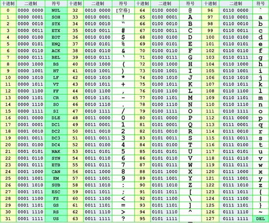

Кодировки
Код алфавита
- AZ/az соответствует 1-26 или 0-25
Кодировка ASCII

Характеристики
Кодировка ascii, которую мы обычно используем, - это видимые символы, и в основном следующие символы
- 0-9 -> 48-57
- A-Z -> 65-90
- a-z -> 97-122
Морфология
Бинарный код
Замените число, соответствующее коду ascii, двоичным представлением.
- Только 0 и 1
- Не более 8 бит, обычно возможно также 7 бит, потому что видимых символов до 127.
- Собственно другой код ascii.
Шестнадцатеричный код
Замените число, соответствующее коду ascii, на шестнадцатеричное представление.
- A-Z -> 41-5A
- a-z -> 61-7A
Example
2018 DEFCON Quals ghettohackers: Throwback
Название описано ниже
Anyo!e!howouldsacrificepo!icyforexecu!!onspeedthink!securityisacomm!ditytop!urintoasy!tem!
Во-первых, мы должны завершить содержимое этих восклицательных знаков, чтобы получить флаг, но после завершения
этого недостаточно, тогда мы можем разделить исходную строку в соответствии с !, Тогда длина строки 1
соответствует букве 'a', длина 2 соответствует букве 'б' и тд.
ori = 'Anyo!e!howouldsacrificepo!icyforexecu!!onspeedthink!securityisacomm!ditytop!urintoasy!tem!'
sp = ori.split('!')
print(''.join(chr(97 + len(s) - 1) for s in sp))
В свою очередь, вы можете предположить, что 0 символов - это пробелы. Потому что это просто делает оригинал читабельным.
dark logic
BaseXX кодировка
XX указывает, сколько символов используется для кодирования. Например, base64 использует следующую кодировку из 64 символов. Поскольку шестая степень двойки равна 64, каждые 6 битов представляют собой единицу, соответствующую печатаемому символу. На 3 байта приходится 24 бита, что соответствует 4 блокам Base64, т.е. 3 байта должны быть представлены 4 печатными символами. Его можно использовать как кодировку передачи для электронной почты. Печатные символы в Base64 включают буквы AZ, az, цифры 0-9, которые в общей сложности содержат 62 символа, и два печатаемых символа различаются в разных системах.

См. Base64 - Wikipedia.
Если количество байтов, которые должны быть закодированы, не может делиться на 3, и в конце будет еще 1 или 2 байта, вы
можете использовать следующий метод: сначала используйте значение 0, чтобы восполнить в конце, чтобы оно может делиться
на 3, а затем закодировать base64. Добавьте одно или два = числа после закодированного текста base64, чтобы
представить количество байтов, которые нужно дополнить. То есть, когда остается последний октет (один байт), последний
6-битовый блок байтов base64 имеет четыре бита со значением 0, и, наконец, добавляются два знака равенства; если
остаются два последних октета Для раздела (2 байта) последний 6-битный блок базового байта имеет две цифры значения 0,
за которыми следует знак равенства.
Поскольку дополнение 0 декодирования не участвует в операции, информация может быть там скрыта.
Подобно base64, base32 использует 32 видимых символа для кодирования, а пятая степень 2 равна 32, поэтому 1 пакет на 5 бит. 5 байтов составляют 40 бит, что соответствует 8 пакетам base32, то есть 5 байтов представлены 8 символами base32. Однако, если он меньше 5 байтов, первые 5 бит меньше 5 бит будут дополнены 5 битами, а оставшиеся пакеты будут дополнены знаком '=' до тех пор, пока 5 байтов не будут заполнены. Видно, что base32 имеет только 6 знаков равенства. Например:

Характеристики
- В конце base64 может быть
=, но может быть до 2 - Base32 может иметь
=в конце, но до 6 - Набор символов будет ограничен в зависимости от базы
- Может потребоваться добавить знак равенства
- = то есть 3D
- См. base rfc для получения дополнительной информации.
Примеры
Example
Описание темы можно найти в ctf-challenge каталог разной классификации base64-stego Файл data.txt.
Используйте скрипт для чтения стеганографической информации.
def deStego(stegoFile):
b64table = "ABCDEFGHIJKLMNOPQRSTUVWXYZabcdefghijklmnopqrstuvwxyz0123456789+/"
with open(stegoFile, 'r') as stegoText:
message = ""
for line in stegoText:
try:
text = line[line.index("=") - 1:-1]
message += "".join([bin(0 if i == '=' else b64table.find(i))[2:].zfill(6) for i in text])[
2 if text.count('=') == 2 else 4:6]
except:
pass
return "".join([chr(int(message[i:i + 8], 2)) for i in range(0, len(message), 8)])
print(deStego("text.txt"))
На выходе:
flag{BASE64_i5_amaz1ng}
Кодирование Хаффмана
См. Кодирование Хаффмана - Википедия.
XXencoding
XXencode кодирует входной текст в единицах каждые три байта. Если последние оставшиеся данные меньше трех байтов, недостающая часть заполняется нулями. Эти три байта имеют в общей сложности 24 бита и разделены на 4 группы по 6 битов. Каждая группа выражена в десятичном формате, чтобы указать, что отображаемое значение будет находиться только в диапазоне от 0 до 63. Замените символом позиции соответствующего значения.
1 2 3 4 5 6
0123456789012345678901234567890123456789012345678901234567890123
| | | | | | |
+-0123456789ABCDEFGHIJKLMNOPQRSTUVWXYZabcdefghijklmnopqrstuvwxyz
Характеристики
- только цифры, прописные и строчные буквы
- +, -.
Кодировка URL
См. Кодировка URL - Википедия.
Кодировка Unicode
См. Unicode - Wikipedia.
Обратите внимание, что у него четыре проявления.
Пример
Example
Исходный текст: The
&#x [Hex]: The
&# [Decimal]: The
\U [Hex]: \U0054\U0068\U0065
\U+ [Hex]: \U+0054\U+0068\U+0065